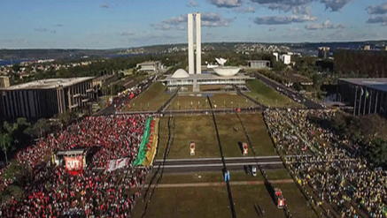

 Informações sobre o Filme: Tempo de Duração: 113 Minutos País: Brasil Idioma: Português Lançamento: 19 de Junho de 2019 Gênero: Documentário, Drama, História, Nacional Classificação: 12+ Estreia no Brasil: 19 de Junho de 2019 Título Original: Democracia em Vertigem Direção: Petra Costa
Resenha Crítica
Democracia em vertigem é um documentário político que expõe os acontecimentos ocorridos entre 2002 a 2018, que retrata a ascensão e queda de Luís Inácio Lula da Silva e Dilma Rousseff, levando a eleição de Jair Bolsonaro. Petra Costa, dirigente desse documentário, nasceu durante e a ditadura militar no Brasil e diz ser filha de militantes, que foram presos durante esse período e viviam foragidos. Em 1979, a greve dos operários do sindicato dos metalúrgicos ABC era liderada por Lula, que defendia o reajuste salarial de 78,1%. Após isso, houve a criação do Partido dos Trabalhadores (PT), fundado por Lula, que concorreu as eleições presidenciais em 89, 94 e 98 e perdeu em todas, pois, apesar de seu discurso ser de acabar com a fome e ajudar aos pobres, ele culpava os empresários e banqueiros, não haviam alianças entre eles.
Esse aspecto, já demostra a postura política do Brasil, em que há uma minoria dominante que pode mudar totalmente o rumo das eleições no pais, visto que é necessário o apoio dela para que o candidato seja aceito. Por isso, em 2003, Lula muda seu discurso e é eleito presidente do país, permanecendo no cargo durante oito anos e fazendo história pelo seu partido.
O governo de Lula foi marcado por diversas e consideráveis mudanças, incluindo a inserção do negro nas universidades que triplicou, a menor taxa de desemprego da história e o enfretamento da crise de 2008 sem se abalar. O legado deixado por Lula, até então, agrava demasiadamente a população que, em 2010, elegeu um de seus candidatos, colocando no poder Dilma Rousseff, a primeira mulher que foi presidente na história do país, presa e torturada aos vinte e dois anos durante a ditadura militar. Dilma foi reeleita em 2014, porém dessa vez, a história seria um pouco diferente. Ela governou um ano e no final de 2015, com manifestações sobre o aumento do preço dos transportes públicos, sua popularidade decaiu e essas manifestações passaram a ser contra ela, o povo pedia impeachment.
Alegava-se que a Presidenta havia feito pedaladas fiscais, crime de desvio de dinheiro público. Esse cenário demostra total insatisfação popular com o Partido dos Trabalhadores, havia muitos processos e provas alegando roubos feitos no caixa público do Brasil e que levou à aprovação do pedido de impeachment.
Há muitas especulações sobre a queda de Dilma, onde uns defendem um golpe, assim como a prisão de Lula, pois, nunca no Brasil havia acontecido um julgamento tão rápido e com um juiz que foi o responsável por todo o processo desde a princípio. Todos esses fatos levaram a eleição do atual presidente Jair Bolsonaro, com características autoritárias e que, inclusive, em seu discurso a favor do impeachment, defendeu o maior torturador da história.
Temas Propostos
Sistema Político brasileiro: